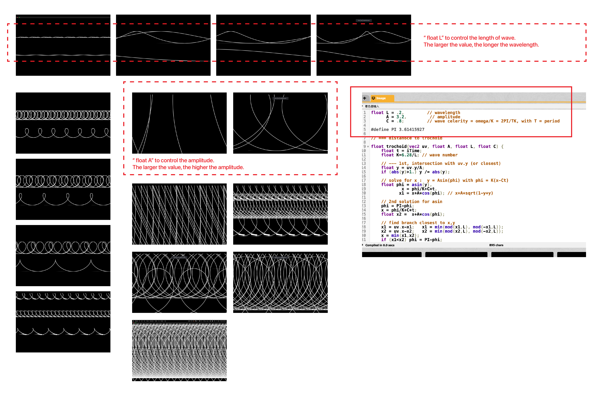

PROJECT 4 Digital Materialities - DOCUMENTATION
Process and Tool
This code is a GLSL shader program, designed to generate an image using the concept of trochoids, which are curves traced by a point fixed on a circle as the circle rolls along a straight line.
Constants and Definitions
`L`, `A`, and `C` are constants representing the wavelength, amplitude, and wave celerity, respectively.
`PI` is a defined constant for the mathematical constant π (pi).
trochoid Function
This function calculates the distance from a given point (`uv`) to a trochoid curve at that point. It considers a trochoid with parameters `A`, `L`, and `C`. The trochoid is defined parametrically, and the function finds the closest distance from the point `uv` to the trochoid.
